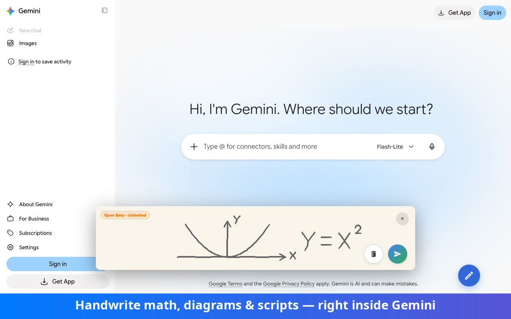
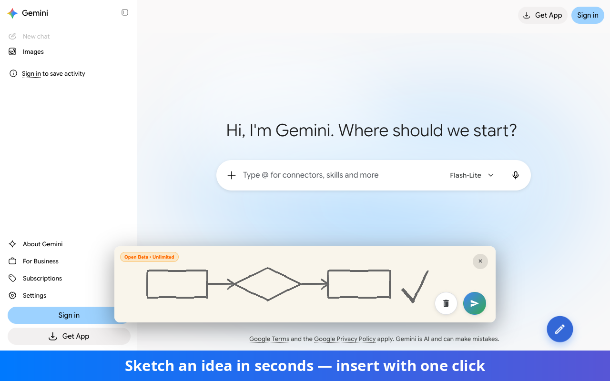
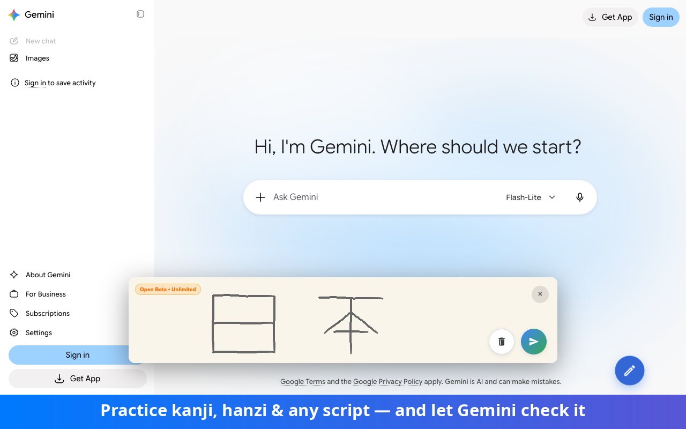
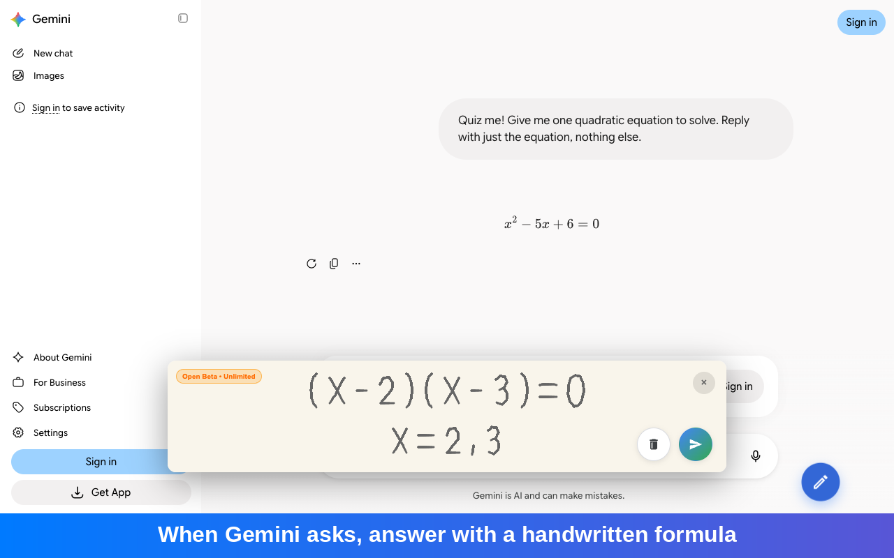
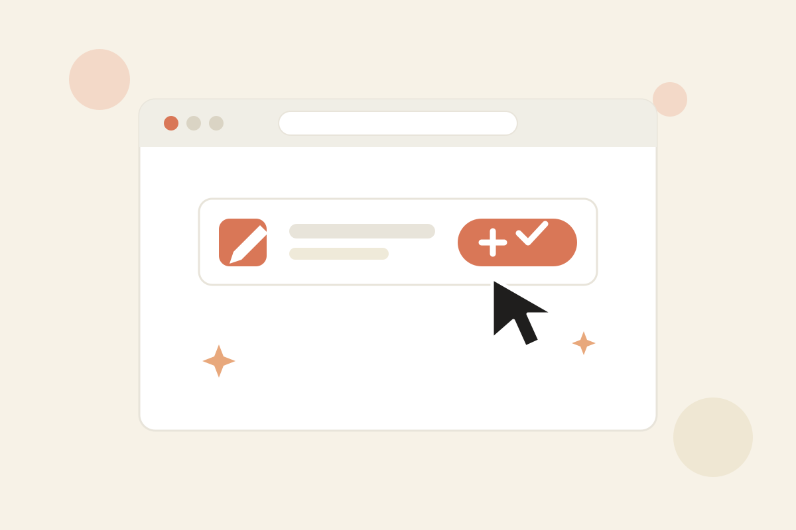
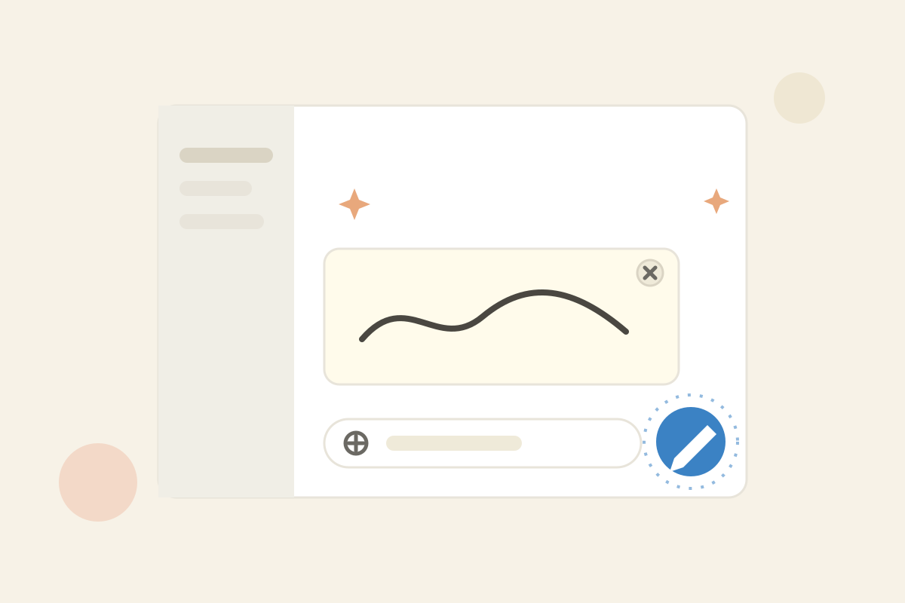
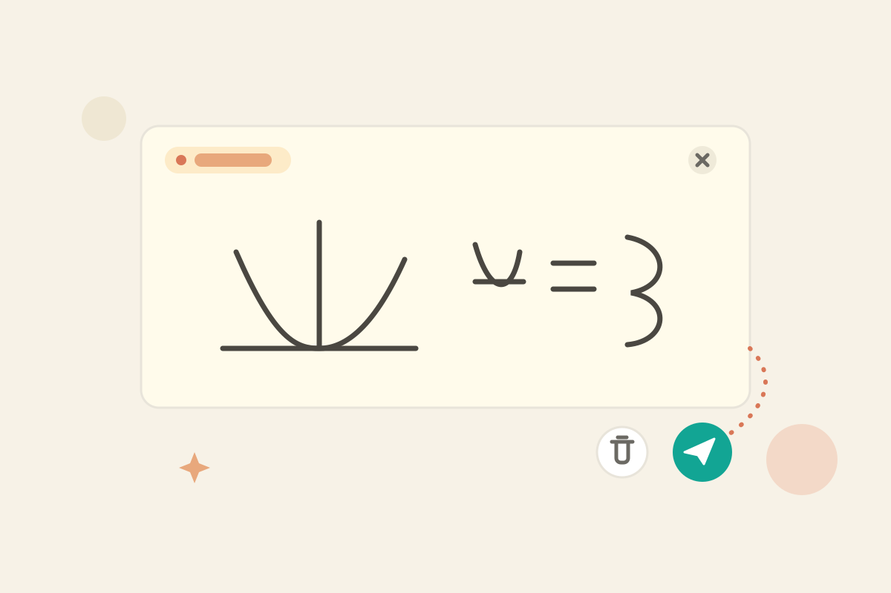
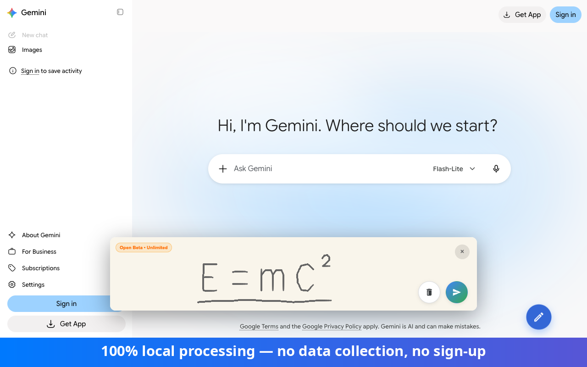

Chrome Extension — handwriter
Geminiに、手書きで伝える。
handwriter は、Google Gemini のチャットに手書きキャンバスを追加する Chrome 拡張機能です。数式・漢字・図表など、タイピングでは伝えにくい内容を、そのまま手で書いてワンクリックで画像として挿入できます。マウス・タッチ・ペンタブレット対応。無料で使えます。
Handwriting for Gemini — draw equations, kanji, diagrams and quick sketches on a handwriting canvas and insert them into your Gemini chat in one click. No data collection; everything runs locally in your browser.
Chromeに追加（Chrome Web Store） 使い方を見る
無料 ・ アカウント登録不要 ・ Chrome Web Store で公開中

実際の画面：Gemini のチャットに手書きキャンバスが開き、数式をそのまま手で書けます
Features
できること
キーボードで打てないものは、書いた方が早い。handwriter はそのための拡張機能です。
数式も、図形も、そのまま手で
分数やルート、グラフの形まで、数式はタイピングで再現しようとすると一手間かかります。handwriter なら、紙に書くのと同じ感覚でキャンバスに描いて、そのまま Gemini に渡せます。問題を解かせたいときも、式の意味を聞きたいときも、書いたものがそのまま伝わります。

漢字や単語は、書いて見せる
読み方が分からない漢字、画数の多い文字、外国語の単語。文字そのものを聞きたいときは、タイプするより書いて見せる方が確実です。キャンバスに書いた文字は画像として Gemini に渡るので、形のまま質問できます。

書いたら、ワンクリックで挿入
キャンバスで書いた内容は、送信ボタンを押すだけで画像としてチャットに挿入されます。あとは通常のメッセージと一緒に送るだけ。手書きの回答例を見せて添削してもらう、といった使い方もできます。

How to use
使い方
追加したら、あとは Gemini を開くいつもの流れのまま使えます。

Chrome Web Store から追加する
このページのボタンから Chrome Web Store を開き、「Chrome に追加」を押すだけです。料金はかからず、アカウント登録も不要です。

Gemini で鉛筆ボタンを押す
Gemini のチャット画面を開くと、右下に鉛筆ボタンが表示されます。押すと手書きキャンバスが開きます。

書いて、送信ボタンで挿入
マウス・タッチ・ペンで自由に書けます。書き終わったら送信ボタンを押すと、書いた内容が画像としてチャットに挿入されます。間違えたらゴミ箱ボタンで消して書き直せます。
FAQ
よくある質問
データの扱いについて：handwriter はデータの収集や追跡を一切行っていません。手書きの処理はすべてお使いのブラウザの中で完結します。

料金はかかりますか？
無料です。Chrome Web Store からそのまま追加して使えます。アカウント登録も不要です。
ペンタブレットがなくても使えますか？
使えます。マウス、タッチパッド、タッチスクリーン、ペンタブレットのいずれでも書けます。
書いた内容はどこかに送信されますか？
いいえ。データの収集や追跡は一切行っておらず、手書きの処理はすべてお使いのブラウザの中で完結します。書いた内容は、あなたが送信ボタンを押したときに画像として Gemini のチャットに挿入されるだけです。
どんな内容を書くのに向いていますか？
数式、漢字や単語、図表やフローチャート、ちょっとしたスケッチなど、キーボードでは入力しにくいものに向いています。文字そのものを Gemini に読ませたいときにも使えます。
Gemini以外でも使えますか？
handwriter は Google Gemini 専用です。Gemini のチャット画面でのみ動作します。